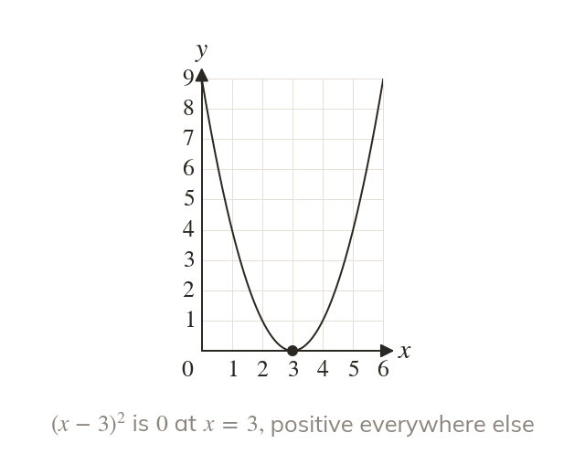
A square is never negative
The square can never be negative. It is smallest, when
A thrown ball, or a business's profit, often follows a quadratic. Completing the square finds its highest or lowest point exactly, without plotting a single value.
Work down the page at your own pace. Write every answer in your book first, then click to check it.
Read each card, then follow the worked examples one step at a time.

The square can never be negative. It is smallest, when
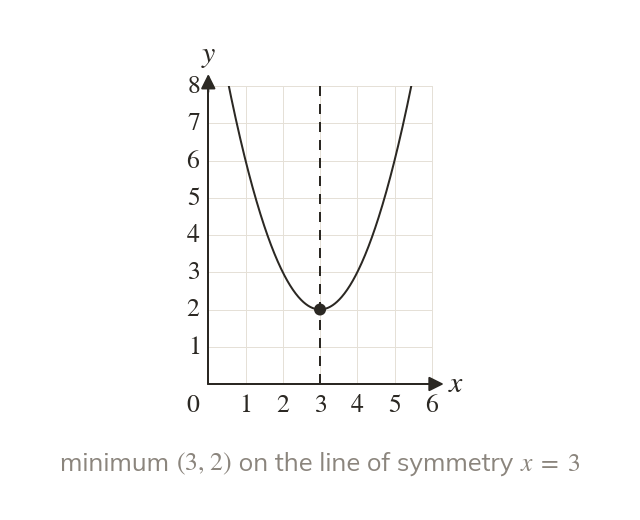
So is smallest when
Its minimum point is
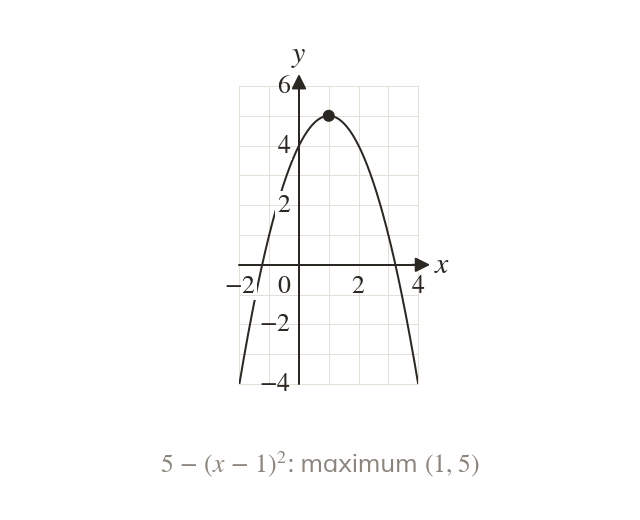
In the square is taken away. So is the highest point.
Pick an answer. If it's wrong, the feedback tells you which mistake it was.
Read each card, then follow the worked examples one step at a time.
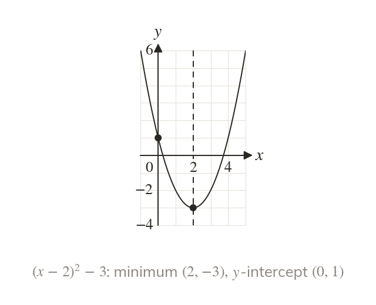
The completed square gives the turning point and the line of symmetry. Putting gives the y-intercept.
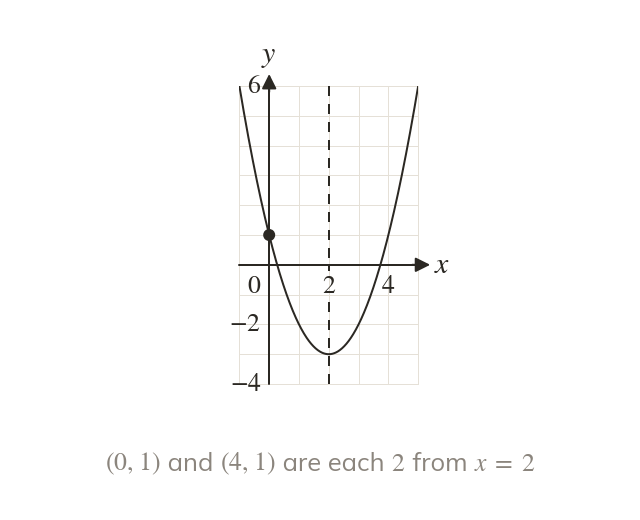
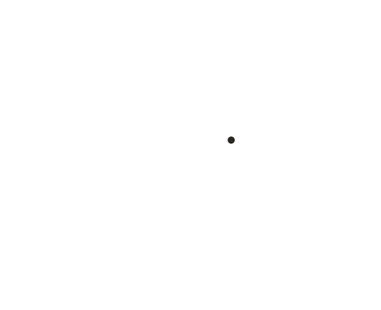
The y-intercept has a partner across the line of symmetry. It sits at the same height on the other side.
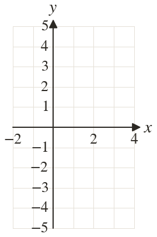
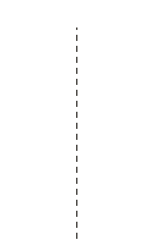
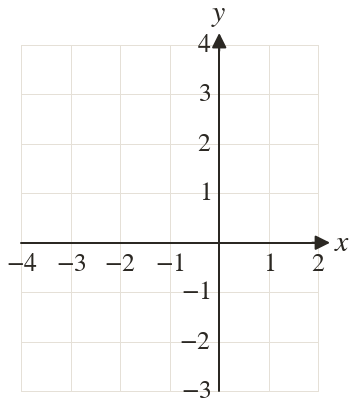
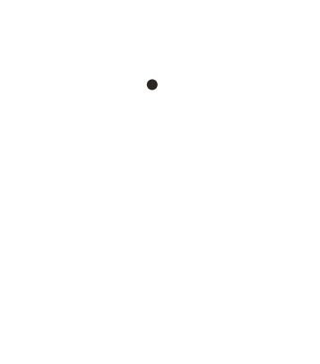
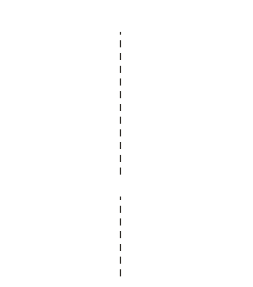
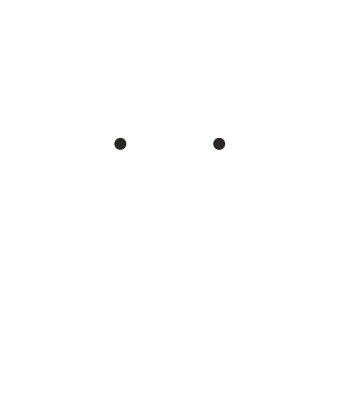
Pick an answer. If it's wrong, the feedback tells you which mistake it was.

Printable worksheet — the questions with room to work.
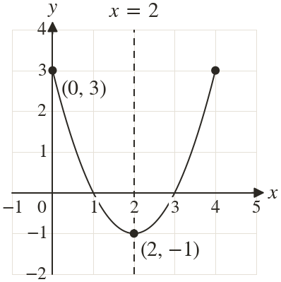
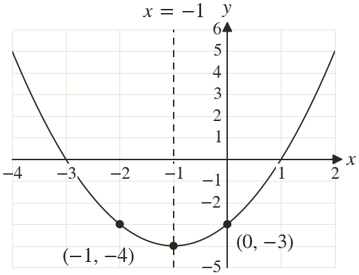
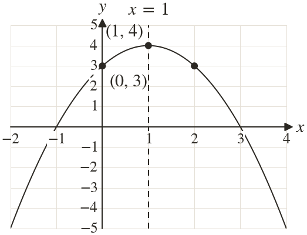
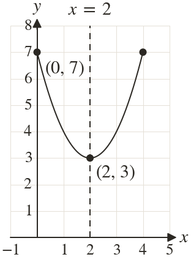
Finished? Next lesson: 10H.15.4 Proving Positivity and Sketching Quadratics.
For each skill, tap the one that is true for you today. Your Revise pages start with anything you mark Not yet.
Your ratings are saved on this device only.
Log in, then search for a code to practise that skill.
Videos, worksheets and more on each part of this lesson.